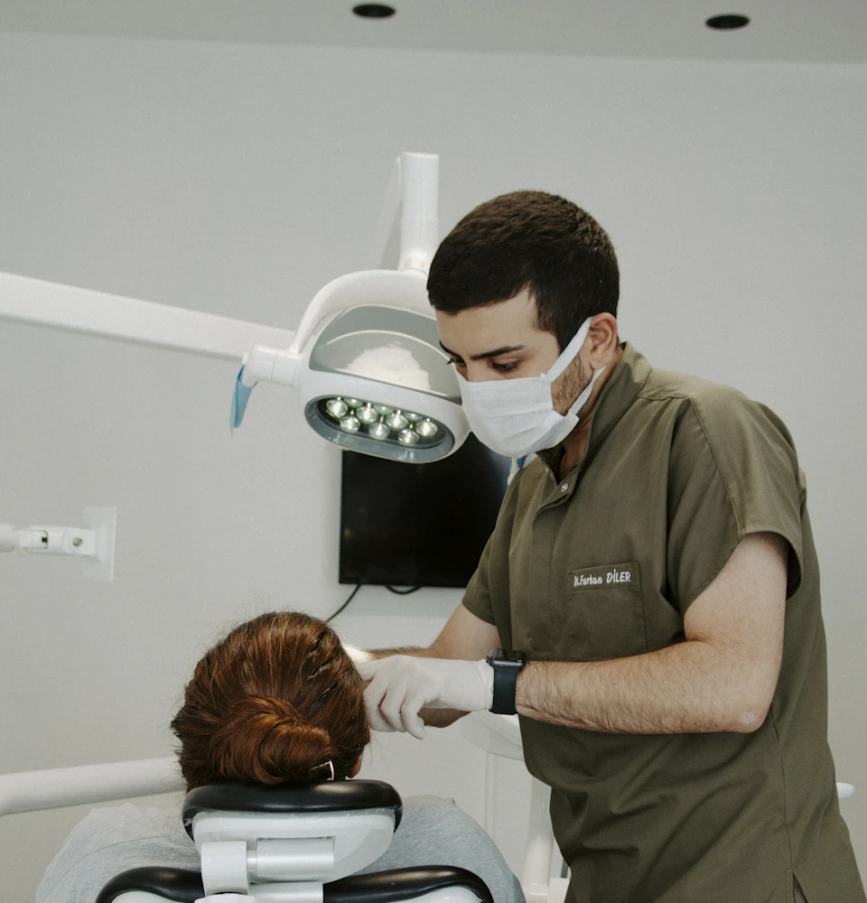
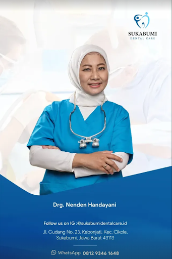
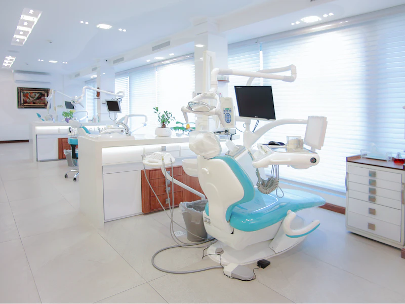
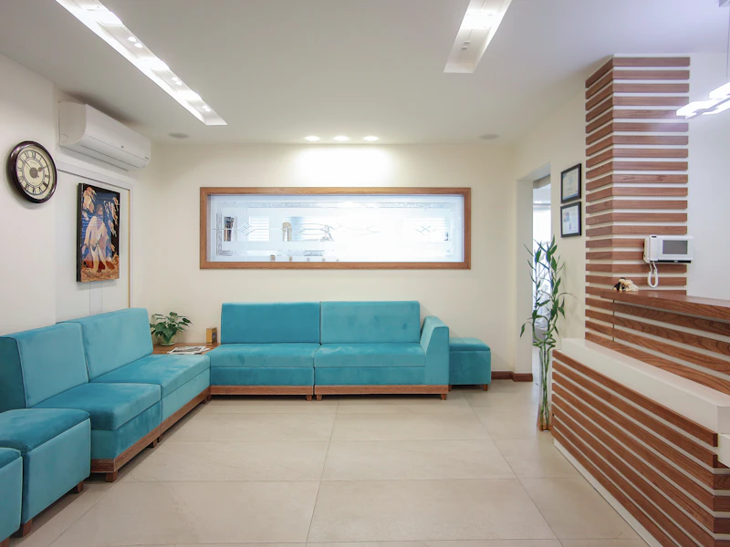
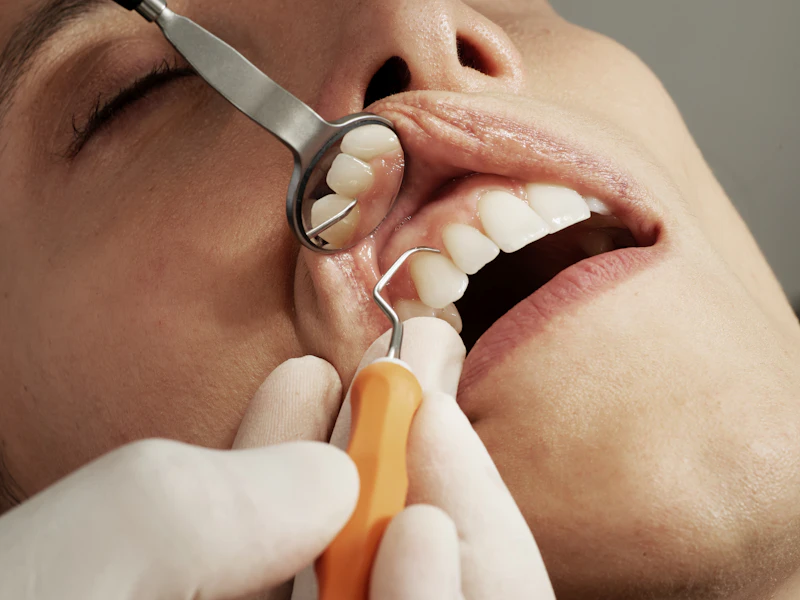
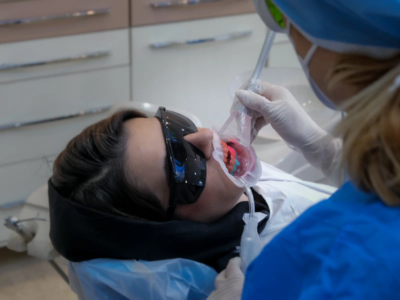

Klinik Utama SAMI di Sukabumi
Perawatan gigi yang
terasa
lebih nyaman &
tenang.
Kenali layanan perawatan gigi dan tim dokter Klinik Utama SAMI. Pilih jadwal kunjungan yang sesuai untuk Anda.
Jl. Gudang No.23, Kebonjati, Kota Sukabumi
Klinik Utama SAMI
dengan perjanjian
Dedikasi kami untuk kesehatan gigi & senyum percaya diri Anda.
Di Klinik Utama SAMI (Sukabumi Dental Care), Anda dapat mengenal pilihan perawatan, berkonsultasi dengan dokter, dan merencanakan kunjungan sesuai kebutuhan. Temukan kami di Jl. Gudang No.23, Sukabumi.
Kunjungan dilakukan dengan perjanjian. Hubungi admin untuk memilih dokter dan memastikan jadwal sebelum datang, baik untuk pemeriksaan rutin maupun perawatan lanjutan.
9
Layanan Lengkap
Mulai preventif, endodontik hingga estetika
Tim Medis
Dokter & Spesialis
Kompak, tersertifikasi, dan komunikatif
Teratur
Dengan Perjanjian
Kunjungan sesuai jadwal dokter
Pusat
Kota Sukabumi
Jl. Gudang No. 23 (Akses mudah & parkir)
Perawatan untuk
setiap senyuman.
Sembilan pilihan layanan untuk kebutuhan gigi dan mulut Anda. Tanyakan kepada admin mengenai layanan dan dokter yang sesuai.
Perawatan preventif
Pemeriksaan berkala, pembersihan karang gigi, dan perawatan pencegahan untuk membantu menjaga kesehatan gigi.
Perawatan saluran akar
Perawatan endodontik untuk menangani bagian dalam gigi dan mempertahankan gigi alami sesuai hasil pemeriksaan.
Ortodontik
Konsultasi dan perawatan susunan gigi serta gigitan, dengan pilihan yang disesuaikan dengan kondisi Anda.
Bedah gigi & mulut
Konsultasi pencabutan gigi dan tindakan bedah mulut, termasuk penanganan gigi bungsu.
Perawatan gigi estetik
Pilihan perawatan warna dan bentuk gigi, termasuk bleaching dan veneer, sesuai penilaian dokter.
Prostodontik
Perawatan penggantian gigi yang hilang dengan gigi tiruan, mahkota, atau jembatan gigi.
Perawatan restoratif
Perawatan tambal dan restorasi untuk membantu mengembalikan bentuk serta fungsi gigi.
Perawatan gusi
Pemeriksaan dan perawatan gusi serta jaringan penyangga gigi sesuai kebutuhan.
Perawatan gigi anak
Pemeriksaan, perawatan gigi susu, dan pendampingan kebiasaan menjaga kesehatan gigi anak.
Kenali dokter
yang mendampingi Anda.
Tim dokter gigi terpercaya Sukabumi Dental Care yang siap memberikan perawatan teliti, aman, dan nyaman dengan janji temu terencana.
Drg. Lily Mustapa, Sp.KG
Endodontik & Konservasi Gigi
Latar belakang & fokus perawatan
Fokus pada perawatan saluran akar gigi (endodontik), restorasi mahkota gigi, pemutihan gigi klinis, dan penyelamatan gigi alami berlubang besar.
Drg. Sammy
Perawatan Restoratif & Estetika Gigi
Latar belakang & fokus perawatan
Menangani restorasi penambalan gigi estetis, perawatan estetika senyum, scaling preventif, serta konsultasi kesehatan gigi komprehensif pasien.

Drg. Nenden Handayani
Preventif, Keluarga & Anak
Latar belakang & fokus perawatan
Ahli dalam perawatan gigi preventif, kesehatan gusi, pencabutan gigi anak/dewasa, dan penanganan ramah bagi pasien yang sensitif terhadap cemas gigi.
drg. Astriani Amanda, Sp.KG · Dokter mitra
Spesialis Konservasi Gigi yang berpraktik setiap Selasa, Kamis & Sabtu pukul 13.00 – 15.00 WIB (Dengan Perjanjian).
Jadwal praktik dokter gigi Sukabumi Dental Care
Klinik Utama SAMI melayani kunjungan sesuai jadwal dokter. Hubungi admin untuk memastikan ketersediaan sebelum datang.
Konfirmasi jadwal via WhatsAppJadwal mingguan lengkap
Senin–SabtuSenin
Dengan perjanjian via WASelasa
Dengan perjanjian via WARabu
Dengan perjanjian via WAKamis
Dengan perjanjian via WAJumat
Dengan perjanjian via WASabtu
Dengan perjanjian via WACatatan: Seluruh konsultasi dan perawatan dilakukan dengan perjanjian. Jadwal dapat berubah; konfirmasi terlebih dahulu melalui admin di 0812-9346-1648.
Mengenal ruang & perawatan gigi.
Sekilas dunia perawatan gigi, dari ruang tunggu hingga pemeriksaan bersama dokter.




Pengalaman Pasien di Klinik SAMI
Kepercayaan Anda adalah amanah bagi kami untuk terus memberikan penanganan gigi yang paling lembut, akurat, dan solutif.
“Sangat berterima kasih dengan penanganan Drg. Lily Mustapa, Sp.KG. Gigi saya yang tadinya sakit luar biasa dan disarankan klinik lain untuk dicabut, di SAMI berhasil diselamatkan dengan perawatan saluran akar yang rapi dan telaten sekali. Tempatnya sangat bersih dan nyaman.”
Lestari Mulyadi
Pasien Perawatan Saluran Akar • Sukabumi
“Bawa anak periksa ke Drg. Nenden Handayani sangat recommended! Dokternya sangat sabar dan ramah, anak saya sama sekali tidak rewel atau takut. Jadwal praktiknya juga teratur karena janjian dulu lewat admin WhatsApp, jadi waktu kita tidak terbuang sia-sia.”
Dimas Haryanto
Pasien Keluarga & Pediatrik • Cikole
Pertanyaan yang Sering Ditanyakan Calon Pasien
Segala hal praktis seputar janji temu, konsultasi, dan pelayanan Klinik Utama SAMI.
Bagaimana cara reservasi jadwal dengan dokter gigi Klinik Utama SAMI?
Apakah melayani pasien anak-anak?
Apa saja layanan gigi yang tersedia di Klinik SAMI?
Di mana letak persis Klinik Utama SAMI dan jam bukanya?
Klinik Utama SAMI Sukabumi
Sukabumi Dental Care
Alamat Klinik
Jl. Gudang No. 23 Rt. 005/005, Kebonjati, Kec. Cikole, Kota Sukabumi, Jawa Barat 43113
Telepon Kantor
0266 - 225 202WhatsApp Resmi (Janji Temu)
0812 - 9346 - 1648Instagram Resmi
@klinikutamasami.idKunjungi kami
Di jantung
Kota Sukabumi.
Jl. Gudang No.23, Kebonjati, Cikole
Senyum sehat & percaya diri dimulai dari langkah pertama.
Jadwalkan konsultasi perawatan gigi Anda bersama tim dokter gigi terpercaya Klinik Utama SAMI Sukabumi. Nikmati pelayanan tepat waktu dengan janji temu terencana.